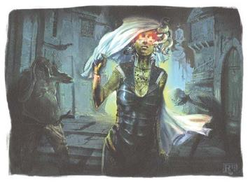

卓姆的居民们都为索拉·科伦的女儿们服务，各地区都会由一个以‘女儿们的名义’的战争领主独立管理，在它们之下，瓢把子统治着当地社会。所有居民都需要在被要求时，尽其所能为了国家而服务。作为对国家忠诚和服务的交换，他们会得到了食物、住所和自尊，努力奋斗的部分原因是他们知道自己正在对抗地区以东的傲慢国度。卓姆的人们被鼓励去相信他们是光荣的一份子，某种即将到来的伟大的一部分。“今天可能很苦难，明天也许更困难。但是，看看我们在过去10年里做到了什么，想象一下我们在下一个10年里会取得什么成就！”
在卓姆，有一些市民会有着具体，明确的工作——矿工，石匠，士兵。其他人则是普通劳动力，也许每天会更换工作内容，在大城市里尤其是如此，城市正在不断扩张着。然而，卓姆还并不是一个组织严密的官僚制机器，只要你愿意就可以从未被察觉的漏洞中从容溜走。大城市里，许多市民都在追求自己的事业。那些看起来懒惰或是惹事生非的人会被抓丁团拖走。就算如此，人们展示出的勤勉和为城市做出卓越贡献都很大程度被低估了，归根结底卓姆仍然是一个蛮夷边境，这个国家只有10年的历史，它的城市还在建设中，未来还能有很多变化。
尽管很多局外人可能会认为，卓姆的制度听起来过于严苛，但这里的大多数居民都真诚地致力于建设他们的新国家。在女儿们出现以前，他们的生活既残酷又丑陋。现在，他们的早餐有用巨魔肉制成的碎肉料理——‘肉麦麸’，他们吃得饱，能在本地有一个床和屋顶。最重要是，有了一种使命感，一个地精可能整天都在矿坑里度过，但它们知道自己正在建设着一座伟大的城市，而不仅仅是为了满足某个脑瘫食人魔的一时兴起。另外，许多市民都发自真心的敬畏索拉·科伦的女儿们，在恐惧与惊叹的两者间微妙的平衡着——对索拉·麦尼亚和她的‘拳’的恐惧，以及由索拉·卡夏的话语所激发的梦想，索拉·塔里莎更是清楚未来将会发生什么。卓姆的民众们能够意识到索拉·科伦的女儿们就是传奇中的人物，它们拥有无尽的力量，它们坚信卓姆有着伟大的命运，它们会反抗世界的偏见，并且她们将一起建设出辉煌的事业。
卓姆有好几种外来语言，来自泽尼尔豺狼人们会喋喋不休的饶舌，美杜莎们通过蛇发的嘶嘶声以及迂回穿行进行彼此交流。然而这个地区，曾经是被达坎帝国所统治过的，地精语长久以来都是贸易买卖的通用语言。几乎每一个卓姆人都会说，或者至少能听懂地精语。
当您在鼓捣一个卓姆居民的生物数据卡时，通常应该用地精语来代替巨人语或兽人语。卓姆的食人魔们与巨魔们和泽恩德瑞克(Xen’drik)所使用的巨人语没有必须的关联。兽人的语言早在几千年前就已经从人们的日常生活中消失了，在今天的科瓦雷基本断绝，也有可能有一个Gaa 'ran兽人的片区仍在使用这种语言。
标准通用语通常被视作一种贸易语言，在现代除了地精语外，有许多生物也能使用它。甚至在女儿们到来之前，靠近“不毛之地”东部的居民们，在与布鲁兰拓荒者、西风骑士团打交道的过程中，就掌握一些通用语。今天，女儿们正在鼓励通用语的推广传播，甚至已经开始在灰墙城和峭岩山城提供常规的通用语言课程，这是因为理解通用语对于进行贸易，和那些可以充当萨拉释克家族雇佣兵的生物是很有必要的。总之，由DM来决定一个特定的生物是否应该会说通用语，如果是的话，它应该会懂得多少。NPC可能只知道一些特定通用语短句，又或是玩家不得不通过魅力(表演)检定，以向不通语言的生物表达他们的意思。在卓姆较文明的地区，识字还是非常普及的，美杜莎，提夫林和幻身灵大都是识文断字的，就像任何一个商人或是特使一样。但目前，大多数普通民众都是丈育，这与长期把教育当做基本权益的五国形成了鲜明对比。
虽然卓姆人说地精语，但他们不像本章后面讨论的达坎人那样。他们对muut and atcha(荣誉和责任)没什么兴趣，并且不会用其余的词汇去完整的体现达坎文化。值得注意的是他们不会用‘chaat’oor’(译者按：地精语，意为"亵渎者"，对非科瓦雷原住民种族的蔑称，尤其指人类)或是‘gath'dar’(译者按："非达尔人"，指代任何非达尔人的类人生物的一般统称)指代人类和他们的其他亲属。相反，他们用‘aravaat’——
意即“东部佬”—— 指代五国人；大抵上来说，可以用来泛指人类、半身人、矮人、精灵和类似的物种。多数卓姆人都懒得去学习了解科瓦雷上其他国家的名字：这儿的西边是阴影湿地(Shadow Marches)，萨拉释克家族与索拉·卡夏的故乡。往北方是齐云森林(Towering Wood)，索拉·麦尼亚的快乐老家。其他的地方就统统都是东方，这便就是大多数人真正关心的。(译者按：地精语中Gaa=XX的崽子，ran=牺牲、供奉，下文中的aram=盛怒、正义的怒火，故而通常未做翻译，姑且叫做尕'冉兽人和尕'拉姆兽人吧，Gaa 'ran and Gaa 'aram。)
大卓姆国，仅仅成立了11年。已经形成了一个大致上的王国，但它还在不断的发展着。女儿们明天可能就会为了实施新的想法又或成立一个新的机构，一个难以掌控的战争领主也可能在一瞬间被碾碎并调换。现在的卓姆已经被划分为了若干 lheshat(藩镇)——地精语词汇，意思是“一位战争领主权力所及的范围”，每一块藩镇都由一名战争领主统辖，他直接对女儿们负责；每个战争领主都统帅着一支能为女儿们服务的军队。
目前，战争领主们都有权利经略自己的领地，并按照他们认为合适的方式，组织他们自己的军队。无论是官僚还是士兵，都没有标准化的制度规范。从“不毛之地”时代开始，最有权势的地方莅事者也被称为“瓢把子”，尽管他们可能并不是这个地区，(通常)最高的大个子和胳膊抡的最圆的生物。在多种生物共同生存的城市里，普通民众们被分为士兵，技术工人和普通劳动力。这些全都由本区域的“瓢把子”直接领导和组织工作。这样的城市里会拥有一个城镇‘磨坊’(本章节后面详述)和一系列的营房，为所有的工人提供食物和共同的住所。在这里不会拥有私有财产，除非你拥有令人崇拜的技艺或让人肃然起敬的职位，但你可以在任何城市都寻到免费的食物和住所。即使城市依旧在快速扩张以满足更多安置需求，但在很多地方，这样的避难所也就是一个帐篷里的铺盖卷而已。
卡夏的愿景是所有的卓姆群众都将一同工作，成为一个更大整体中的一部分。在这个理想的情况下，努力工作的劳动者不应当害怕遭受虐待，包工头也不是一定心血来潮就打骂(或是吃掉)它们的雇工，这是对这片“不毛之地”生存环境的极大改善。卡夏希望劳工们的努力能够得到尊重。就像戈林达尔人(golin’dar)在凯赫达坎人(Kech Dhakaan)中受到尊重一样。不过，尽管当下女儿们宣扬这种理想，然而在实践中并不总是受到积极响应；仍会有也虐待劳工的恶棍。虽然劳工们得到了一些宽待，但是一如既往的，胆敢挑战女儿们或战争领主的任何人还是会被无情地碾碎。在任何划分好的藩镇里，战争领主统治着它们的领地，他们下面的瓢把子们则领导各个社区。但是有三股力量在这个系统之外运作，它们直接为女儿们工作并在全国范围内都拥有职权：
卡夏之声(Katra’s Voice)的代理人是使者和艺人，充当外交官和调停者。它们的任务是保持士气和确保司法信息渠道的流畅，并在纠纷失控前介入以解决争端。卡夏之声(Katra’s
Voice)中的大部分代理人都是幻身灵，但是美杜莎，提夫林，甚至是鸟妖，都可以担任这个职务。一部分人关注他们作为艺人的角色，向普通民众分享故事并描绘光明的未来。其他人则更注重于调停仲裁和司法裁判。特别是在“瓢把子”与劳工之间发生骚乱的时候。
然后麦尼亚之拳(Maenya’s Fist)时常会随同卡夏之声的使者：如果“声音”不能体面安排，“拳头”就上去安排体面。这些食人魔和巨魔威武又雄壮，完全忠诚于女儿们，一个战争巨魔就可以干碎一打调皮捣蛋的牛头人。
塔里莎之眼(Teraza’s Eye)的代理人都是智者，他们精通该地区的历史和多样的文化习俗。他们调查古代遗迹，识别和确定显能区域与位面叠接。他们经常性的为当地战争领主提供谏言。尽管是这三支力量里最小的一支，但有心人认为那些被看得到的“眼”只是掘地虫的脑壳尖尖——大坨的在下面。塔里莎之眼主要是通过幻身灵和其他秘密特务在运作，它们会把一切进展的情况回禀给女儿们。‘眼’这个名头，是其组织及相关人士的代号，一个执行公务的‘眼’只会在你面前：“我既是‘眼’，‘眼’正在听你说……”
卓姆不受到《伽利法法典》的限制，也没有统一的司法裁决准则。因此，除非卡夏之声放话，‘王法’就全攥在当地的瓢把子手心里。每个瓢把子身边都簇拥着一众兄弟伙，在一些小村落，可能会是不多的Gaa 'aram兽人，但在一个比如灰墙城的像样城市里，这些兄弟是一支个个都身怀绝艺的重要武装力量：兽人，牛头怪，食人魔，又甚来自鸟妖和石像鬼的拥护。任何主要的社区都会安排泽尼尔的豺狼人卫戎部队。这些雇佣兵在必要的时候会成为维护公共安全的干员。不过他们只服务于女儿们，而不是当地瓢把子；实际上，它们的存在就是为了震慑某些瓢把子不要去违逆女儿们。
说到底卓姆还是一片荒蛮边疆，大多情况下，规矩都很简单：不要卷入瓢把子或女儿们所属的任何事和物当中。卫队可不会在意随时都能发生的街头斗殴和酒吧打架，不在乎是否有什么玩意儿偷了你的钱包。他们对到这里的潜逃者在其他什么地方，违反了什么样的法律也不感兴趣。然而，他们会警惕能对建筑明显造成破坏的行为，又或是任何可能导致多名工人死亡的状况——就是那些任何可能威胁本地社区创造先进生产力的事。所以玩家角色们在卓姆，只要谨慎行事应该就可以侥幸逃脱很多惩罚。当一名哨戒执行官(Sentinel Marshals)，在灰墙城里进行跨国追捕一名逃匿的罪犯时，当地守卫不会出面干涉。他们也不会干涉罪犯雇佣三个巨魔去袭击执行官的行为，守卫们的第一要务只是保护城镇和瓢把子。个人权利和财产的重要性对于卓姆的平头‘小’百姓没什么意义，如果你寻求司法审判，那你就不得不自己去实施。
在大多数的社区里，瓢把子们会惩处严重的罪行并立即执行死刑，对于那些犯了些许小事儿的：这些自讨苦吃的会被落上烙印，或是胖揍一顿打断腿，又或进行审判决斗；大多数城市都有处理这事儿的竞技场(尽管大家也可以自愿选择成为角斗士)，而那些逃脱了处罚的人最终会被免于追责。
寻求司法裁决的那些人还有一种办法：卡夏之声是具有地方裁判官的职能的，就是说有权管理司法。地方裁判官会在较小的社区之间巡游，在较大的地方，比如灰墙城，会有一个常驻的裁判官，现在比较时兴由美杜莎担任裁判官。如果一个裁判官觉得某个案子有点东西，她就会命令这里的瓢把子处理好它——但是一旦她考虑到对瓢把子的控诉是在扯犊子，她就会把控诉人变成石头。鉴于此，很少有人愿意冒险去寻求这样的司法裁决——但对劳工们来说，知道他们还可以这样去做也不失为一种安慰。
灰墙城有一个影响力巨大的涉外区域，卡拉巴斯(Calabas)是灰墙城的一个地区。灵吸怪战争领主科索齐利克Xor’chylic(一个灵吸怪总督的名字)，授予萨拉释克(Tharashk)的昆德兰·托伦(Kundran Torrn)在卡拉巴斯控告不法行为的权利，这意味着在这个地区，《伽利法法典》的大部分内容会占有主导地位。这种制度也可以应用到其他拥有大量东部居民人口居住的地区。
在考虑卓姆地区的法律和秩序时，要牢记这些基本原则：虽然当地的守卫们通常并不干涉街头械斗，但其实致命暴力并不像外来者想象的那样普遍。有一条心照不宣的规矩，越高越壮实的好汉就拥有优先通行权，地精们知道要给巨魔腾出道路。当然的啦，例外总是会有，任何人都知道要给美杜莎姐们儿让道。除此之外，大多数住在城市的卓姆居民们都想要成为卡夏精心安排的一部分。巨魔们其实很理解那些叽叽喳喳的地精，尽管它们可能很烦人。但它们就像是卡夏大姐大的小小兄弟伙。如果小兄弟坑了老姐姐，老姐姐就会给他一个大耳巴子——让他知道什么叫做好好学习天天向上——但大姐大一般不会一巴掌就把它们打了个焦巴碎，自然也不会把他们吃掉。如果你要和巨魔好汉掰掰手腕？那它可能会直接用爪子插你的胳肢窝；但如果你马上表现出悔不应当，冲突就到此为止了。但转过来说，如果一群东部佬要寻隙滋事，卓姆居民们对这些外人就没有这样的好相与了；即使是守卫们不出来制止，居民们也乐得自告奋勇。所以一个脱离低级趣味的聪明人会懂得在好汉云集的城市里低调行事。
仁慈和同情对卓姆来说是陌生的概念，既不用期盼也没有给予。正义和复仇之间没有什么区别，如果你在乎，就得靠自己的铁拳来把握。这个世界分为捕食者和被捕食者，而成为捕食者总是更好的选择。能活到一天的结束是一种胜利，拥有一宿之地和食物就得欢呼庆祝。需知一箪一食皆来之不易。卓姆的人民如果认可并把你视为朋友，那他们是最坚定的盟友，他们会为保护他们所爱之物而战。不过它们并不上心陌生人的命运：如果保护朋友会给陌生人造成痛苦，那就这样呗。
在使用卓姆人创造角色时请记住，如果你对陌生人残酷，那是因为你认为这个世界就是一个残忍的地方。你也许追求崇高的目标，想要成为所有人都希望的那位最可靠的朋友，但你出生在一个残酷的世界，而只有残忍生活的世界你最懂得。(译者按：卓姆好汉义字当头，但不以仁行天下。这~一~拜；春风得意遇知音，桃花~~也含笑……)
卓姆没有固定的货币，日常劳动的报酬标准是包吃包住。大多数卓姆人的交易依靠以物易物，技术熟练的工作或付给奢侈品。然而，大多数的主要城市中的商人接受东边的金属货币和两种次要“通货”。矿工们做生意经常用到碎块，小块的贵重金属或宝石碎片。使用带有悬赏标识的牙齿进行易货和赌博也很常见。索拉·科伦的女儿们(通过‘瓢把子’)悬赏某些危险的孽畜，按照它们的牙齿支付报酬，这样的牙齿处理后都刻着一个地精符号，用来识别它的来源，但大多数商人并不会接受牙齿，除非他们自己就能辨别这颗牙——所以你不能在狼的牙齿上刻上“飞龙”来假冒。当DM将悬赏标记的牙齿作为一种形式的货币时要说：“这老地精提供了三颗移位兽的牙齿，价值10个银币。”——而杀死危险怪物的冒险者，会能想到它的牙齿能值多少钱。DM可以参考《城主指南》第七章的“个人宝藏”以确定来确定什么CR的怪物具备什么数量的悬赏价值。不过呢，牙齿货币是基于女儿们对每一笔悬赏的估值，并不是每个生物都有恰如其分的“大金牙”。一些危险的生物可能有很高的估价，而另一些可能则毫无价值。这样的悬赏是一种鼓励消除威胁的方式，如果一个生物威胁不到卓姆人民，或者是卓姆的盟友，就可能没有对其的牙齿有悬赏。
虽然以物易物比货币交易更麻烦，但也可以是引入有趣冒险元素的契机。也许一个地精商人无法兑换铂金块，但它提供了一片牛皮纸作为交换，它看起来也许是地图的一部分，地精说这玩意儿来自城市的下面。达坎时代的遗物，异变魔战争的奇特遗留，布鲁兰(Brelish)逃兵当押的物品，这些东西可能对提供它们的人来说价值不大，但对接受它们的人来说却是无价之宝。
卓姆的主要出口商品是通过萨拉释克家族进行的贸易——来自拜什克(Byeshk)和其他山区中的矿石；平原上的艾伯伦龙晶碎片；以及本地居民的雇佣兵契约服务。但卓姆通常是五国非法货品的来源。就比如说毒药，当然还有其他更猎奇的物品：龙血(Dragon’s blood)在《艾伯伦：从终末之战崛起》的第四章有描述；壮勇(Courage)是一种兴奋剂，给予使用者在对抗恐惧时的豁免优势，不过长期服用会导致妄想症，并让人处于紧张的恐惧状态中；血琴酒(Blood gin)是一种导致神经坏死的麻醉剂，从玛伯尔黑夜位面(Mabaran)的显能区域中的浆果中提取，这些浆果需要在被暴力杀害的受害者血液中发酵，在重演受害人生命中最后的时刻中会掀起极度的愉悦感，但经常使用它的人可能会被可怖的噩梦所困扰。这都是几个例子，卓姆还是许多其他地方找不到的怪异玩意儿的生息地。它还是外来生物的器官来源和藏身之所，这可能是创造魔法物品的关键组件；如果你需要血糜兽(luecrotta)的眼睛[译者按：该生物在瓦罗书中有记载]灰墙城(Graywall )市场可能是你最好的机会。卓姆的市场也接纳强盗土匪的赃物和来自五国的逃兵、战犯和变节者的零碎玩意儿。总而言之，你永远可以期待在地精市场能找到什么！
在描述卓姆的商品时，请考虑广泛范围地区的各种风格和特质，其中有一些在卓姆工艺品表上有所描述。“不毛之地”的掠夺者没有铁匠而且用着木头和石头的简单武器进行战斗，或者使用由安戴尔和坎恩 (Karrnath)制作的装备。然而，女儿们与豺狼人和美杜莎一直在致力于改善这种状况，想在更加多元化的城市里寻找更多可以工作的工匠。恶毒领则是一个神秘的先进社会，虽然他们缺乏坎尼斯龙纹家(House Cannith)的工业能力，然而他们很擅长制作超过五国普通水准的魔法宝物，卓姆人使用的大多数魔法物品都来自这里。
|
D8 |
风格 |
|
1 |
原始荒野：食人魔和兽人的作品，粗犷且没有一致的风格。材料采用石头，木头和骨头 |
|
2 |
泽尼尔豺狼人：由泽尼尔(Znir)的工匠制造，在人们的眼中看起来很丑陋，但实际功能强大非常可靠。出色地利用木材和皮革，加上少量的金属加工而成。 |
|
3 |
卡萨克卓尔：由熟练的美杜莎熟练工匠所制，比泽尼尔(Znir)和荒野出品更加讲究，匀称的曲线上雕刻着图案装饰，合理的金属结构，不过也会有搭配着来自Stonelands的一种异常坚固的石木制作。 |
|
4 |
麦尼亚之拳：专为索拉·麦尼亚的精英士兵打造，包括用极优秀的金属打造的重型装甲和金属武器；风格上采用野兽派浓重鲜艳的风格，起到恐吓的作用。 |
|
5 |
恶毒领：使用高端的奥法科学制造而成，常见由精巧的金属件、陶瓷，还有拥有鲜艳丰富的布料与珐琅构成。即使是简单的物品也可能是一件普通魔法物品。 |
|
6 |
东部佬:来自东方的物品，通常是从五国流入。这些东西可能是上次战争中交付到‘不毛之地’袭击者的补给，又或是近年来被商人和强盗带进来的。 |
|
7 |
拼凑：实用的东西被收集并拼接起来，这才是卓姆人的普遍做法——尤其是豺狼人，一把达坎的斧子可以在泽尼尔风格的斧柄上，或是一套铠甲由三套各不相同的套件组成。 |
|
8 |
古代达坎：从地区的某个达坎遗迹中寻回，这些物品相当古老，可能很陈旧了。但是依旧威力惊人。 |

卓姆是一幅由不同信仰的文化组成的复杂织锦。牛头怪们崇拜一个被称为角冠王子(Horned Prince)的存在，不过在每一个氏族里都有特有的名字来称呼他们的守护神。鹰身女妖说他们用‘狂怒’(the Fury)之音歌唱，他们也相信‘狂怒’之音是艾伯伦在生下这个世界时疼痛的呼嚎。迷失的幻身灵相信自己是‘旅者’(Traveler)的选民。泽尼尔的豺狼人拒绝听从任何神祇或魔祇。而恶毒领的邪术师领主则认为神或魔之间是等量齐观，只有力量可以划定界限或与之探讨协议。
尽管有这种广大的多样性，黑暗六神在整个地区都有广泛的崇敬。虽然每一种不同的亚文化都有自己喜欢的神性和个人缘由，但大多数人都知道卡萨克信条(Cazhaak
Creed)的基本原则——一种对名叫卡萨克·德拉尔(Cazhaak Draal)的美杜莎对天命诸神与黑暗六神的诠释。在卓姆的每一个多元文化的城市中都有简易道路与神龛和神像相连，但正牌的神殿都是‘阴影’(The Shadow)的之一，很可能是由一个美杜莎牧师在照管。
卡萨克信条承认天命诸神的存在，但把祂们描绘成提出索取的暴君而不给予信徒任何东西。相反，黑暗六神支持自由和公平的交换。信条之中，‘阴影’(The Shadow)是所有被东部人民视为“怪物”的守护者。‘奥林’(Aureon)和‘那九位’积蕴祂们的力量，而‘阴影’却分给了他们的孩子神妙礼物:美杜莎深邃的眼眸，巨魔自我的重生，食人魔生猛的力量。因而‘阴影’是那些寻求神的指引或介入的人最常顶礼的天主【译者按：黑暗六神中的‘阴影’被认为是九位天命诸神中的‘奥林’的影子。】
总的来说，卡萨克信条赋予黑暗六神等同于五国中派里尼信条(the Pyrinean Creed)的重要价值，但信条把这些概念视为美德。‘阴影’是野心的天命，帮助你求得通往权力的道路，即使这意味着要在路上踩倒别人。‘狂怒’是本能的天命，如果你欣然接受你的情感，她会教你渡过情海。她也是复仇的天命，而复仇就是正义硬币的另一面。‘嘲弄’(The Mockery)展示了斗争中的胜利之途，即使这需要你接受背叛和恐惧；在卓姆，勇气和荣誉需要让位给胜利和幸存。‘吞噬’(The Devourer)挥舞着野性的权柄，他淘汰弱鸡，而那些经受住考验的将会变得强大。‘监守’(The Keeper)的司祭们主持与死亡相关的仪式，这些仪式因物种而异——从通过美杜莎的石化让身躯衰微者不用死亡，到让巨魔和食人魔咀嚼他们的尸体。这些司祭也充当治疗者的角色，因为疾病和传染也是‘监守’的工具，祭司可以通过花点钱来移除它们。‘监守’是繁荣和贪婪的天命，他的牧师总是乐意帮忙——只要恳求者提出了一项交易。除了幻身灵之外，很少有人直接崇拜‘旅者’，但祂的名号总是得到人们认可。
所有的这些都会在卓姆以许多微妙的方面得到呼应。举个栗子：狂欢是致敬‘狂怒’的狂热庆典，鼓励在那儿的参与者们放下一切束缚，拥抱自己的激情。许多卓姆人将交战中的首杀献给‘监守’，希望通过向天命蕴藉灵魂来获得青睐。而且，依照惯例会将意外之财分一份上供给‘监守’，这样祂就不怎么嫉妒了。
卓姆人非常宽容别人的信仰，尽管(或因为)这里有许多不同的信仰与习俗。如泽尼尔的豺狼人鄙视邪魔，但并不妨碍牛头人和提夫林对其习俗的惯例。鹰身女妖不会与美杜莎抬杠什么是‘狂怒’的本质；他们知道正确答案，这还不够吗。一般来说，通常每个人都敬重‘阴影’，即使对不同的人来说这意味着不同的事情，这个原则也适用于‘东部佬’。卓姆人认为信仰天命诸神是愚蠢的，但如果你呼唤‘奥林’也无需心烦，也不用考虑离梦人(kalashtar)或是精灵信仰什么。
在卓姆的信仰自由只有一个例外——银焰教会，教会认为保护无辜者不受神灵魔怪的威胁是他们的使命，而卓姆的居民基本上都算是“神灵魔怪威胁”。银焰领导了许多突然袭击和远征进入这片不毛之地，‘黑暗群狼会’(Dark Pack)也不会那么快就忘记狼人大逃杀。任何公开佩戴银焰标志的人，最多只能得到来自卓姆群众敌对的反应，以及最好不要独自外出才是明智的。
为什么‘不毛之地’的人们花了这么长时间才建成伟大的城市？在某种程度上，这是因为他们无法养活这样一个城市的人口。卓姆的许多居民都要吃肉，而对于那些不必须吃肉的人则是缺乏大规模农业的种植的来喂饱，像今天在灰墙城和峭岩山城这般的大量人口。这个简单的口粮问题控制了‘不毛之地’的人口成长。
当索拉·科伦的女儿们用卡夏之声(Katra’s Voice)和麦尼亚之拳(Maenya’s Fist)巩固统治时，她们也用食物来换取忠诚。索拉·科伦的女儿们承诺任何为她们服务的人都会享有住所和食物。它们实现了自己的承诺，提供了似乎无穷无尽的食物供给。主食是一种称为“肉麦麸”(grist)的碎肉，可以用来炖煨、做肉馅饼或香肠食用。“肉麦麸”又硬又酸，但却能填饱肚子，而“肉麦麸磨坊”似乎有源源不断的供应。卓姆的人很少知道或关心‘肉麦麸’的来自何方，但来访者们可能会更容易紧张兮兮一些——因为“肉麦麸”是用巨魔肉做成的，磨碎并加工以供所需。索拉·科伦的女儿们掌握着加工‘肉麦麸’的秘密，这是在科瓦雷其他地方都吃不到的特色食物。本来，巨魔的肉有毒而且会让人长出肿瘤，但女儿们想出了一种神奇的药草和香辛料混合物，与碎肉一起搅拌后就可以吃了。
每个主要的社区都有一个“肉麦麸磨坊”——一个供应‘肉麦麸’的公共自助食堂。‘肉麦麸磨坊’中挤满了收集在此的巨魔；有些是为了惩罚强制留在这，而另外一些就纯粹为了这个目的而被豢养。它们的肉被慢慢切掉，但总是留出让乖乖们安全再生的时间——尽管这个过程的痛苦可能让人感觉不适。磨坊提供‘肉麦麸’的菜式每天都在变化，炖菜；香肠；肉汤，但其实食材都是一样的，而且大多数人东部佬都觉得它像是馊了，非常难吃。‘肉麦麸’唯一的可取之处是它完全免费。所以，享受一碗‘肉麦麸’煨肉汤吧，喝完这杯还有三杯。
对于那些有多余碎块和牙齿[译者按：卓姆的次要通货]的人来说还有更多选择。肉类是卓姆的主食，大多数群众喜欢一分熟；实际上，许多小个子巨人更喜欢活吃。有一些食材对人类来说可能是非常危险的；例如，巨魔喜欢咀嚼干燥的食腐虫触须，对大多数生物而言这样会造成立竿见影的麻痹和僵硬。有些菜肴会用上一种微小的活软泥，卓姆人认为这很有助于消化。总之无论你走到哪里，那儿的菜肴都能反映出该地区的异域风情。清蒸甲伏怪在海岸线一带好评如潮，香辣移位兽在内陆绝不能错过。
人们常说，艾伯伦的“魔法广泛普及，而不是高魔深湛”。五国的文明是基于低级法术的广泛普及应用之上，实用的解决社会问题——通信、娱乐、战争。然而在卓姆，索拉·科伦的女儿们正在试着建立一个不是基于魔法普及的文明，而是基于一种普世怪物的文明——发掘居民们如何将自己的过人天赋用在实处。美杜莎的凝视是一种令人发指的武器，但石化却能保护严重受伤或生病的人，直到他们能够得到适当的照顾。石像鬼可以充当使命必达信使，鸟身女妖担任大喇叭街镇公告员，这些都是对他们自然天赋的显著运用。至于制作‘肉麦麸’的发明是巨魔再生一种更奇特的实用化。在卓姆冒险时，你需要考虑如何意想不到、实用性的方式利用怪物的天赋，以推动文明的发展。如果你能巧妙的挥舞大锤，那么每个棘手的问题就都是小小铁钉。但如果你现在能调动的是美杜莎和石像鬼又当如何？可以注意以下的例子：
鸟身女妖的歌Harpy Song。东边的人们都听闻鸟身女妖是一种怪物，它的声音会引诱无辜的人走向死亡。但是一只极具天赋的‘歌鸟’可以有比制造成强大魅控效果更加广阔的前景。才华横溢的鸟身女妖之歌可以激发希望或是造成绝望，烘托喜悦或是让听众们泪眼婆娑。鸟身女妖喊着劳动号子提醒该上班了，鼓励工人们嗨唷嚯嗨。每个‘肉麦麸’磨坊都有一只‘歌鸟’用她神奇的歌声在下班时抚慰疲倦的工人。就像鸟身女妖能以它超然的天赋引吭高歌，‘歌鸟’也可以报告时间，并担任市镇中的报务员，将重要的信息传递给整个社区。
医学Medicine。卓姆的外科医生们采用比乔克拉斯家族(House Jorasco) 更惊世骇俗的方法，但这些技术的确也有效。血线虫作为一种蛆虫其分泌物可以给病人的伤口提供麻醉和清洁感染的帮助。微量的胶质方块[译者按：一种泥怪]也被用作一种不寻常的麻醉剂。虽然还没有进入普遍的临床使用，女儿们一直在用巨魔的血做试验，这是一种宣称具有‘显著疗效’的治疗药膏，说的跟真的似的……卓姆是一个严酷的地方，大多数时候，当人们遭受苦痛时只能选择“忍着”，但女儿们承诺在未来的日子里创造一个更美好的世界。如果她们真的能大量的生产完美的巨魔生生再造丸，它将会颠覆性的改变卓姆的公共卫生现状。
孔武Brute Force。由于拥有众多的食人魔和巨人，卓姆可以说是“天生神力”。许多在五国中需要专业设备或驮兽的工作，在这里只需要一个又高又壮又像人的玩意就能搞定。